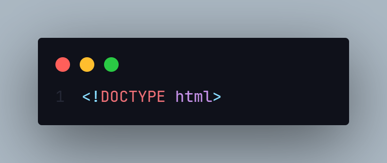
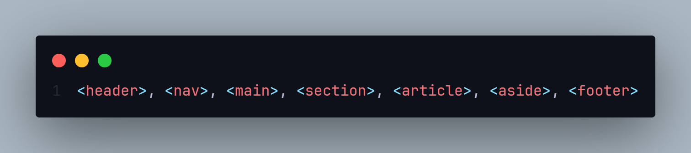
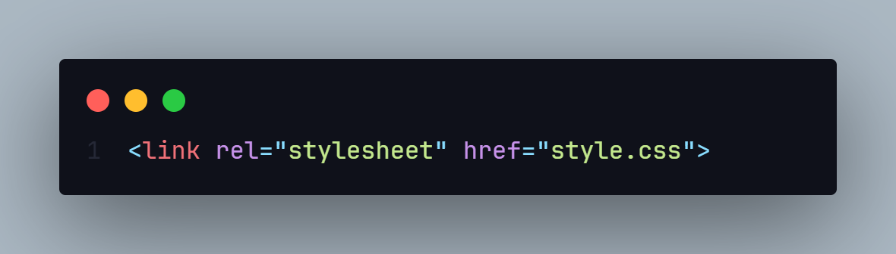

Чек-лист по код-стайлу HTML и CSS
Создание чистого, организованного и легко поддерживаемого кода является важным аспектом разработки веб-сайтов. Ниже представлен чек-лист по код-стайлу HTML и CSS, который поможет вам сохранять код в идеальном состоянии. Для более подробного изучения код-стайла рекомендуем прочесть статьи, представленные ниже.
HTML
1. Доктрина
Убедитесь, что вы всегда указываете правильную доктрину (DOCTYPE) в начале вашего HTML-документа. Это гарантирует, что ваш веб-сайт будет отображаться правильно во всех браузерах.
2. Кодировка символов документа
Кодировка символов на странице всегда должна быть явно указана, чтобы обеспечить корректное отображение текста. Для Кириллицы нужно использовать UTF-8 кодировку, убедитесь что ваш документ так же имеет кодировку UTF-8.

3. Использование семантических тегов
Используйте семантические HTML-теги для разметки вашего контента. Это позволяет браузеру, поисковым системам и технологиям помощи лучше понимать структуру и содержимое вашего сайта.
4. Закрывающие теги
Закрывающий слеш у одиночных тегов (<img>, <br> и другие) не ставится. В остальных случаях, как <body></body>, <p></p> или <li>/<li>, обязателен закрывающий тег.
5. Подключение стилей
Файл стилей подключается с помощью тега <link> внутри тега <head>.
CSS
Хороший код — это код который удобно читать и поддерживать.
Вот несколько рекомендаций по написанию хорошого и простого кода:
- - используйте легко читаемые селекторы и говорящие классы. По ним сразу можно понять к чему применяются стили.
- - классы пишите в нижнем регистре (строчными буквами).
- - вместо пробела в классах используйте знак «дефис». Старайтесь не использовать нижнее подчеркивание и camelCase.
- - код должен быть в одном стиле: везде используется один порядок свойств, одинаковые отступы и пробелы, один стиль записи цветов и псевдоэлементов.
Оформление блока со свойствами
- после селектора, перед открывающей блок «фигурной скобкой» ставьте «пробел».
- в начале строки перед свойствами ставится «два пробела». Это самый популярный вариант.
- после двоеточия ставьте «пробел».
- обязательно ставить «точку с запятой» в конце свойства.
- ставьте закрывающую «фигурную скобку» на новой строке.

Все стили пишем через селектор класса. Теги используем только для глобальных стилей, id в стилях не используем.
!Важно: избегайте использования !important в селекторах.
Рекомендуем также проверять свой HTML и CSS код в валидаторе.